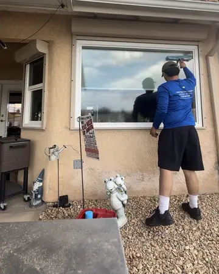
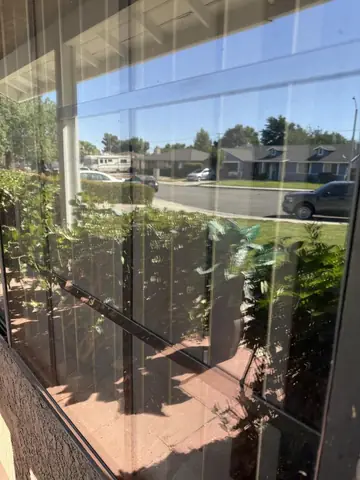
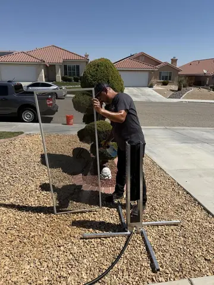
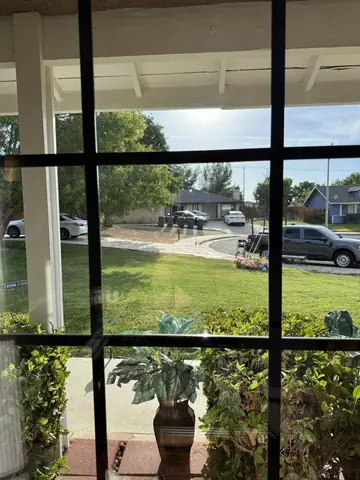
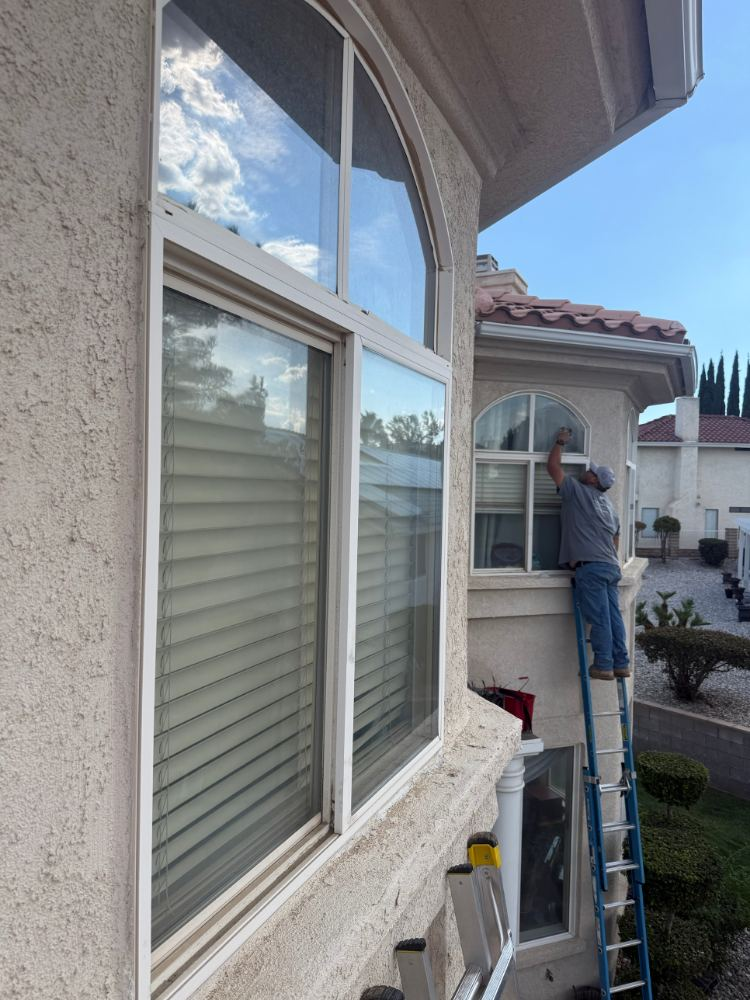

Home/Hard Water Removal
Serving the High Desert this weekHard Water Stain Removal for High Desert Glass
If Windex did nothing, it is not dirt.
That cloudy band along the bottom of the window is mineral left behind every time a sprinkler hit the glass and dried. A normal wash does not touch it. Restoration does, and we test one pane free before you pay for any of it.
Read our Google reviews · Free inspection · Satisfaction guaranteed
Interested in seeing window cleaning we've done?
Photos from our own jobs, with the town on each one we know. Tap one to see it bigger.

Hesperia · Tony on the squeegee Tall arched windows
Tall arched windows Apple Valley · Corner picture window
Apple Valley · Corner picture window
Oak Hills · Picture window
Phelan · Screen washing in the yard
Oak Hills · Looking out, inside done


Like what you see? Request your service below.
Tell Tony what your property needs
Choose one or more services and a preferred day. Tony confirms the scope, final price and appointment personally. No payment is taken here.
The Victor Valley makes hard water stains faster than almost anywhere
Mineral heavy water
Municipal water across Hesperia, Victorville and Apple Valley carries a high mineral load. Well water in Phelan, Oak Hills and the outer lots is heavier still.
Sprinklers that reach the glass
Most stains are on one side of the house, on the lower third of the panes, exactly where a rotor head throws. That pattern is the diagnosis.
Heat that evaporates it in minutes
Water hits the glass, the sun takes the water, the mineral stays. In July that cycle repeats every morning. A few hundred repeats and it is no longer a spot, it is a layer.
Lake and well irrigation
Spring Valley Lake, Silver Lakes and any home on a well get the worst of it. Some of that glass has never been clear since the day the sprinklers were installed.
Stage one comes off. Stage two does not, fully.
This is the single biggest factor in whether the job is worth doing, and the question to ask anyone who quotes you.
Stage one · surface deposit
- Cloudy or rainbow film, feels slightly rough
- Sits on top of the glass
- Comes off completely with the right compound
- Most High Desert windows are here
Stage two · etched glass
- Mineral has reacted with the glass surface
- Still visible after the deposit is lifted
- Can be improved, sometimes a lot, not erased
- Replacement is the only full fix
The free test pane tells us which you have in about ten minutes. If it is stage two we show you the best result we can get on that pane and let you decide whether it is worth doing the rest. We will not sell you a restoration that leaves you disappointed.
Four steps, one pane at a time
Test pane
We pick the worst pane, treat one half, and show you the line. Free. That is the quote conversation.
Mineral compound
A glass safe restoration compound worked with a white pad. No acid strong enough to damage frames or seals, no razor on dry glass.
Purified rinse
Deionized water takes off the compound and dries with nothing behind. This is where a hose rinse would put spots straight back on.
The sprinkler talk
We walk the heads with you and point out which ones are reaching the glass. Turn them a few degrees and the work lasts for years.
Spring Valley Lake, where the water does the most damage
Lake irrigated sprinklers, tall two story glass, and a cloudy band on every lower pane. Restored and cleaned in one visit. More on the lake.



What it costs
Priced per pane so you only pay for glass that actually needs it.
Added to a standard exterior clean · $149 single story · $249 two story · free test pane
- One pane tested free before anything is quoted
- Compound restoration on every pane you approve
- Purified water rinse, no spots put back
- Screens, tracks and sills done as part of the clean
- Written note on any pane that is stage two
- Sprinkler walk so it does not come back
A typical single story home with eight to ten affected lower panes runs $200 to $300 including the standard clean. Whole house restorations and shower glass are quoted after the test. If we find stage two etching we say so on the spot and you decide pane by pane.
Why we are the right call for etched glass
- We test before we quote One free pane, half treated, so you see the result with your own eyes. Nobody else up here does this, which is why so many people have paid for a restoration that did nothing.
- We say when it is past saving Stage two etching is common in Oak Hills, Phelan and Spring Valley Lake. If that is what you have, we tell you what we can get and what we cannot. Pam's review on the reviews page, "all hard water stains gone", came from stage one glass and we told her that first.
- Purified rinse, not a hose Rinsing a restoration with tap water puts mineral straight back on. Ours dries clear. It is the difference between a job that looks good for a week and one that looks good for years.
- $12 a pane, in writing, before we start You approve the panes, you know the number. No hourly meter.
Related pages
Hard Water Stains on Windows
Where the white spots come from, which stage yours are at, and what a normal clean will not touch. Read more
Window Cleaning Plans
Twice a year is 15% off every visit after the first. Read more
Window Cleaning in Spring Valley Lake
From $149, screens, tracks and sills included. Read more
Hard water questions
How much does hard water stain removal cost?
From $12 per pane face on top of a standard exterior clean, so a single story home with a handful of etched lower panes usually lands between $200 and $300 all in. We test one pane free before quoting so you see the result before you pay for it. $149 job minimum applies to any visit.
How do I know if it is hard water and not just dirt?
Wipe it with a wet cloth. Dirt moves. Hard water does not. It shows as a cloudy or rainbow band, usually along the bottom third of the glass, often only on the side facing a sprinkler. If Windex and elbow grease did nothing, it is mineral.
Can every window be restored?
No, and anyone who says yes is guessing. Stage one deposits sit on the surface and come off completely. Stage two has started etching into the glass itself and can be improved but not fully cleared. The free test pane is how we find out which you have, and we tell you before quoting the rest.
Will it come back?
Only if the water does. The deposit is left behind every time a sprinkler hits the glass and evaporates. Adjust the heads so they stop reaching the windows and the restoration lasts years. Leave them as they are and you will be calling again in two summers.
Does it work on shower glass?
Yes. Shower doors are the same problem indoors. Same process, same test first. Interior work is scheduled with you home.
Why is it worse in the High Desert?
Mineral load in the water is high across the Victor Valley and worse on well water in Phelan, Oak Hills and Apple Valley's outer lots. Add heat that evaporates overspray in minutes and you get a deposit on every cycle. Spring Valley Lake, with lake fed irrigation, is the worst we see.